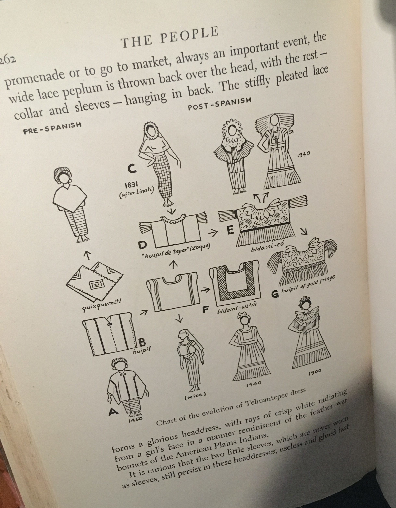
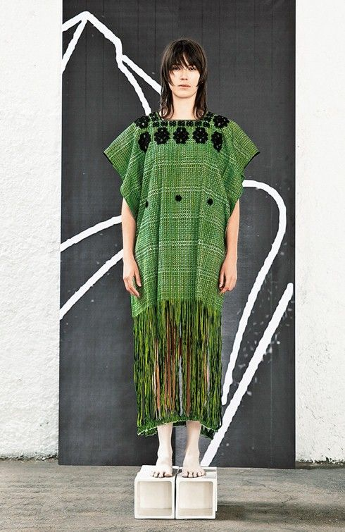
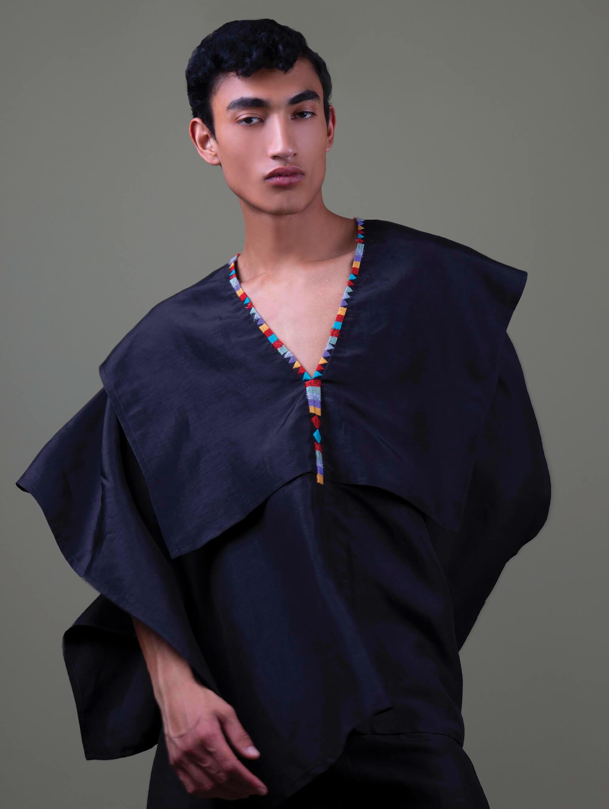
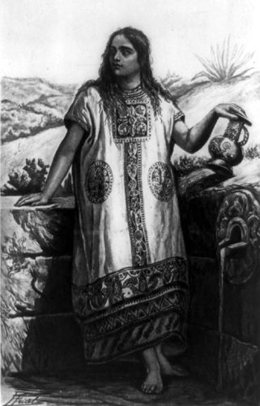
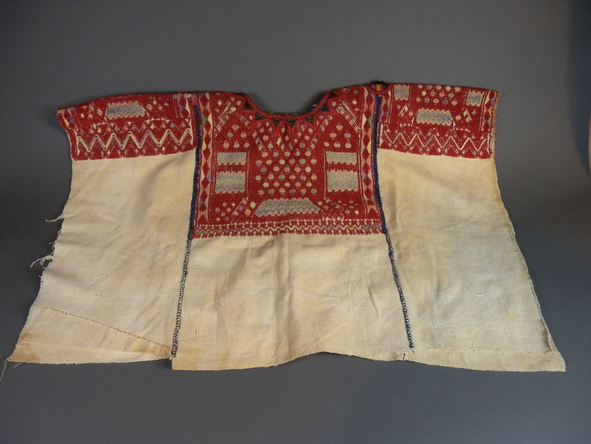
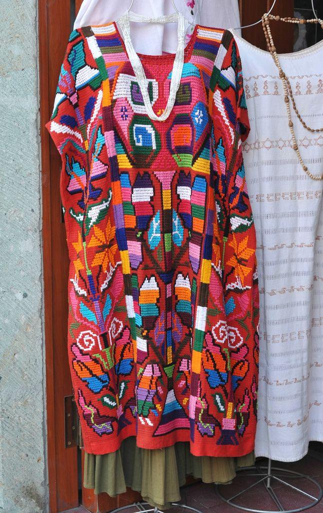
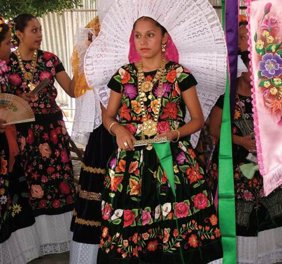

Also known as the Agbbada (Igbo) or Babban Riga (Hauswa), the Boubou (Wolof) is a large, rectangular, wide-sleeved robe that is layered over several clothes. It has a neck hole at the top and a wide pocket on the side. It is most worn in West and North Africa, particularly in majority muslim countries. It is usually made out of silk and is ornamented with intricate embroidery, oftentimes with Arabic calligraphy. While it is traditionally seen as a male outfit, it is also often worn by women as well. Historians trace the origin of this garment to Berer and Arab merchants from West Asia coming into North and West Africa, who brought with them, among other things, Islam and new modes of dress. This garment as a full suit also includes matching baggy trousers, a long sleeve shirt underneath, and an embroidered hat such as the asa oke or kufi. The agbada is associated with wealth and prestige. This full suit is intricate and labor-intensive to produce and was often worn on special occasions by royal and noble figures. The production process involved skilled textile artists, professional dyers and embroidery by religious scholars and artisans.

Fabrication
Requires 2 to 4 long strips of cotton. The long length would have a triangle cut for the neck opening, with embroidery going along the edges from the neck to the chest area, and extending to the back. Most of the work is done by the draping around the shoulders, which gives the robe volume and movement.
2Day/Tmrw

Huipil by Carla Fernandez

Quetzalli men's huipil by Carla Fernandez

Painting of Toltec woman in huipil by Charles Skinner, 19th century

Guatemalan huipil

Oaxacan huipil

Tehuana Huipil with Phillipino-style embroidery


{kind=link}
{kind=link}
{kind=link}
{kind=link}
{kind=link}
{kind=link}